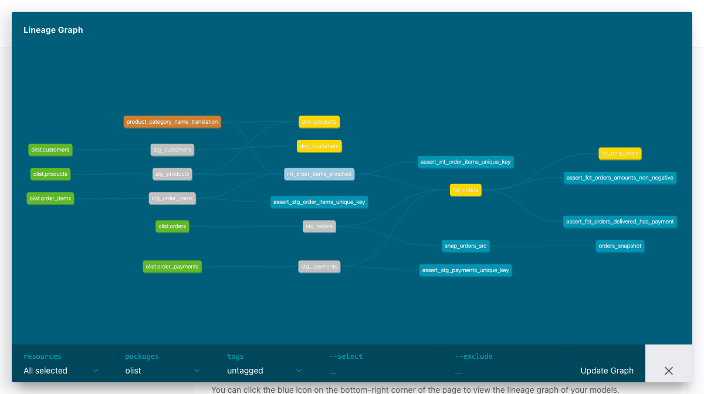

이 문서는 dbt를 모르는 사람도 이해할 수 있도록, 두 도구가 무엇이고 · 어떻게 흐르고 · 왜 필요한지를 실습 결과와 함께 정리한 것입니다.
자사는 Spark 기반 분산 ETL/ELT 플랫폼(DidimDP)을 운영 중이다. 한편 데이터 생태계에서는 dbt(ELT 변환 표준 도구)와 DataFusion(Arrow 기반 차세대 쿼리 엔진)이 빠르게 확산되고 있다.
목적 — 이 신규 도구의 특성·동작 원리를 직접 체득해 향후 기술 검토·개선 논의의 판단 재료로 삼는다. 개념 수준이 아니라 직접 명령어로 검증하고 동작하는 POC로 감을 잡는 데 초점을 뒀다.
※ 본 학습은 검토·체득이 목적이며, 자사 플랫폼과의 본격 비교분석·도입 여부는 별도 후속 과제다. 아래 "자사 스택 관점"은 결론이 아니라 검토 관점으로 읽어주세요.
SQL 변환 로직을 버전관리·테스트·문서화·순서관리. 직접 연산은 안 함(엔진 없음). 창고에 "이 SQL 실행해줘"라고 떠넘김.
데이터를 메모리에 올려 직접 계산(집계·조인). SQL을 진짜로 실행하는 쪽. dbt가 만든 SQL이 결국 이런 엔진 위에서 돈다.
비유 — dbt는 레시피북 + 주문서(뭘 어떤 순서로 만들지 관리), DataFusion·DuckDB는 주방 + 오븐(실제로 요리). 그래서 둘은 경쟁이 아니라 같이 쓰는 사이다.
※ 요즘 표준은 ELT(먼저 적재하고, 창고 안에서 SQL로 변환). dbt는 그 "변환(T)"을 담당한다.
dbt는 분석가가 SQL SELECT문만 작성하면, 그것을 버전관리·테스트·문서화·의존성관리되는 데이터 모델로 바꿔준다. "여기저기 흩어진 SQL 스크립트" 문제를 푸는 도구.
| 개념 | 한 줄 설명 |
|---|---|
model | 변환 하나 = .sql 파일 하나(SELECT문). 실행하면 뷰/테이블로 생성됨 |
source() | 외부에서 적재된 raw 테이블을 가리킴 (파이프라인 입구) |
ref() | dbt가 만든 다른 모델을 가리킴 → 실행 순서(DAG)를 자동 결정 |
| test | 데이터 품질 단언(unique·not_null·관계 등). 실패 시 하위 빌드 중단 |
| materialization | 모델을 view로 만들지 table로 만들지 전략 |
| snapshot | 바뀌는 원본의 변경 이력(SCD2)을 기록 |
💼 비즈니스 시나리오 — "이커머스 매출을 분석하고 싶다: 어떤 상품·고객이 · 얼마를 · 언제 샀나?"
이 질문에 답하려고 Olist(브라질 이커머스 실데이터, 주문 99,441건)를 source → staging → intermediate → marts 3계층으로 직접 구축했다. 각 계층이 시나리오의 어느 부분을 담당하는지가 아래 구조다.
| 계층 | 실제 구성요소 | 시나리오상 역할 |
|---|---|---|
| source 원천 5 | orders · order_items · order_payments · products · customers | EL이 적재한 raw — 주문 / 주문상품 / 결제 / 상품 / 고객 원본 |
| seed 1 | product_category_ | 카테고리명 포르투갈어→영어 룩업 (분석 가독성 확보) |
| staging 5 (view) | stg_orders · stg_order_items · stg_products · stg_payments · stg_customers | 원천 1:1 정리 — 타입 캐스팅 · 컬럼명 표준화 |
| intermediate 1 (view) | int_order_items_enriched | 주문상품 + 상품 카테고리 결합 (마트들이 공유하는 중간블록) |
| marts 4 (table) | fct_orders · fct_daily_sales · dim_customers · dim_products | 비즈니스 질문에 바로 답하는 최종 지표·차원 |
✱ source가 왜 5개, seed가 왜 1개? 기준은 "어디서 왔나"가 아니라 dbt 프로젝트(레포) 기준 외부냐 내부냐다.
source = 외부 — 프로젝트 밖의 raw를 가리키기만 함(크고 계속 쌓이는 운영 데이터) ·
seed = 내부 — 프로젝트 안(seeds/)에 파일을 품고 git 커밋 → dbt seed로 직접 적재(작고 안 바뀌는 사전·코드표).
※ 이번 학습에선 6개 CSV를 모두 Kaggle에서 받았지만, 실무 역할대로 운영성 5종은 source(외부 적재 가정), 71행 카테고리 번역표는 seed(내부 참조)로 나눴다.

ref()만 보고 dbt가 스스로 그린다.이 그래프의 핵심: 개발자는 순서를 한 번도 지정하지 않았다. 각 모델이 ref('...')로 "나는 이걸 참조한다"만 적으면, dbt가 전체 의존성을 계산해 올바른 실행 순서(DAG)를 자동으로 만든다.
실습으로 눈으로 확인한 것 — ① ref('stg_orders')가 컴파일되면 "olist"."main"."stg_orders" 3단 완전수식으로 치환됨 ② 상위 테스트가 실패하면 하위 모델이 SKIP되는 "게이트" ③ 원본 한 행을 바꾸니 snapshot에 dbt_valid_from/to로 이력 2행이 생김(SCD2).
시나리오의 질문들이 각각 하나의 마트로 떨어진다:
| 마트 | 답하는 질문 | 그레인(1행 단위) | 어디서 왔나 |
|---|---|---|---|
| fct_orders | 주문 1건당 매출·상태·결제는? | 주문(order_id) | stg_orders + int_order_items_enriched + stg_payments |
| fct_daily_sales | 매출이 날짜별로 어떻게 변하나? | 구매일자 | fct_orders 집계 |
| dim_customers | 고객은 누구·어느 지역인가? | 고객(customer_id) | stg_customers |
| dim_products | 상품·카테고리는 무엇인가? | 상품(product_id) | stg_products + 카테고리 seed |
💼 이 구조가 비즈니스에 주는 것 — 매출 지표(fct/dim)가 source→마트로 흐르며 각 단계에 테스트(품질 게이트)와 계보가 붙는다. 그래서 "이 매출 숫자가 어디서 왔고 · 믿을 수 있고 · 바꾸면 무엇이 영향받나"를 자동 보증 → 변환 거버넌스. 위 계보 그래프가 바로 그 자동 추적의 산출물이다.
DataFusion은 Rust로 작성된, Apache Arrow(컬럼형 인메모리 포맷)를 쓰는 쿼리 실행 엔진이다. dbt와 달리 직접 연산한다. SQL과 DataFrame API를 둘 다 제공한다.
EXPLAIN을 찍으면 이 단계가 그대로 보인다. 우리는 이걸 실제로 관찰했다.
💼 비즈니스 질문 — "주문 상태별 총 매출은 얼마인가?" 이 한 질문이 SQL이 되고, SQL이 실행계획을 낳는다. 계획의 연산자 하나하나가 질문의 특정 요소에서 태어난다.
# ① 질문을 SQL로
SELECT o.order_status, sum(p.payment_value)
FROM orders o JOIN payments p ON o.order_id = p.order_id
GROUP BY o.order_status;
# ② DataFusion이 만든 물리계획 (Olist 17MB, 일부) AggregateExec: mode=FinalPartitioned ← 최종 집계 RepartitionExec: Hash([order_status], 8) ← 8갈래 병렬 재분배 AggregateExec: mode=Partial ← 부분 집계(2단계) HashJoinExec ← 해시 조인 DataSourceExec: file_groups={8 groups: ← 17MB 파일을 [orders.csv:0..2206865], 8개 바이트범위로 [..4413730], [..6620595], ...} 나눠 동시 스캔!
| ③ 시나리오 요소 | → 태어난 연산자 | 왜 이 연산자인가 |
|---|---|---|
| 17MB 주문 CSV를 읽어야 함 | DataSourceExec (8 file_groups) | 큰 파일을 8개 바이트범위로 쪼개 8코어가 동시 스캔 |
| 주문+결제를 order_id로 결합 | HashJoinExec | 조인이 필요 → 옵티마이저가 해시 조인 선택 |
| 상태별로 묶어 합산(GROUP BY) | AggregateExec (Partial→Final) | 코어별 부분집계 후 최종 병합 = 2단계 병렬 집계 |
| 8코어를 다 쓰기 | RepartitionExec Hash([status],8) | 같은 상태를 같은 파티션에 모아야 병렬 집계가 정확 |
→ 즉 실행계획은 "질문을 어떻게 병렬로 풀지"를 DataFusion이 스스로 설계한 결과다. 부분집계·해시조인·파티션 재분배 모두 이 시나리오가 낳은 것.
🔑 파티션 8 = CPU 코어 8개. DataFusion은 기본적으로 "가진 코어를 다 써서" 병렬 처리한다(target_partitions). 큰 파일은 파일 자체를 바이트 구간으로 쪼개 여러 코어가 동시에 읽는다. → 이론의 "벡터화·멀티스레드·파티션 병렬"이 계획에 그대로 박혀 있음을 확인.
pay_bucket()을 직접 만들어 SQL에서 호출. → 엔진 확장성.같은 "월별 매출" 쿼리를 DataFusion과 DuckDB 두 엔진에서 돌렸다(둘 다 로컬 임베디드 분석 엔진).
| 비교 축 | 결과 |
|---|---|
| 결과값(정합성) | 완전 일치 — 25개월 매출 동일 (2017-11 피크 ~119만) |
| API 사용감 | DataFusion: register_csv 후 sql() / DuckDB: 파일을 FROM '...'에 직접 |
| SQL 방언 | DuckDB는 month가 예약어라 별칭 불가 → 엔진마다 문법이 미묘하게 다름 |
| 속도(10만행, 참고) | DataFusion 184ms / DuckDB 310ms |
💼 비즈니스적으로 — 위 작업은 같은 매출 데이터를 "경량 엔진으로 빠르게 처리하는 그림"이다. 분산(Spark) 없이 단일노드로 10만 건 집계·Parquet 변환까지 처리. DuckDB와 나란히 비교한 것은 곧 "엔진 선택 시 정합성·성능 판단 근거"를 확보한 셈 — 결과는 같고 방언·속도·사용감이 다르다는 실측. → 자사 매출 데이터에 대입하면 = 경량 워크로드에 Spark 오버헤드 없이 처리하는 선택지 검토.
| 🛠 dbt | ⚡ DataFusion / 🦆 DuckDB | |
|---|---|---|
| 정체 | 변환 오케스트레이터 | 쿼리 실행 엔진 |
| 연산 엔진 | 없음 (SQL을 엔진에 떠넘김) | 있음 (직접 계산) |
| 하는 일 | 버전관리·테스트·문서·의존성(DAG) | 스캔·조인·집계 실행 |
| 데이터 보관 | 안 함 | 메모리에 올려 처리 |
| 결과물 | 신뢰할 수 있는 데이터 모델 + 계보 | 쿼리 결과(Arrow) |
둘은 층이 다르다. 실무에선 dbt가 변환을 관리하고, 그 SQL을 DuckDB·DataFusion 같은 엔진이 실행하는 조합이 자연스럽다.
두 도구는 기존 Spark 스택을 대체하는 관계가 아니다. 오히려 각각 다른 계층에서 붙을 수 있다.
| Spark / DidimDP | 🛠 dbt | ⚡ DataFusion | |
|---|---|---|---|
| 계층 | 분산 실행 엔진·플랫폼 | 변환 관리 계층 | 단일노드 실행 엔진 |
| 규모 | 대용량·분산(다노드) | 규모 무관(엔진에 위임) | 단일노드·벡터화 |
| 라이선스 | — | Apache 2.0 (무료 OSS) | Apache 2.0 (무료 OSS) |
| 자사 스택과의 접점 | 현행 기반 | dbt-spark 어댑터로 Spark 위에 얹힘 — 변환 규율을 기존 실행 위에 | Comet 플러그인으로 Spark 실행을 네이티브 가속(Apple 기여), 또는 경량 워크로드용 |
🔑 핵심 포지셔닝 — dbt는 "무엇을 어떤 순서로 변환할지"를 관리하는 규율 계층이라 Spark 실행 위에도 올릴 수 있고, DataFusion은 분산이 필요 없는 경량·임베디드 처리나 Spark 가속(Comet)의 재료가 될 수 있다. → "교체" 프레임보다 "어느 계층에 어떻게 보완할까" 프레임이 적절.
기대효과 — 재현성·신뢰성·협업, 문서 자동화.
기대효과 — 경량 워크로드 비용·지연 절감, Arrow 제로카피 연동.